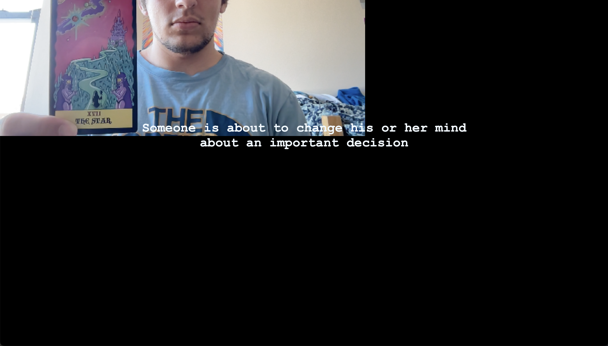

tarot reading is one of the most popular ritual practices today, somewhat because of the accessibility.
to make tarot even more accessible, especially for people on their own, i came up with this electronic tarot reader.
for people who want to learn how to read tarot, there's plenty of resources online, but fledgeling tarot readers have to either memorize the interpretations of different cards, or look them up as they're doing a reading.
during the exercise in class, i wished that there was a way to just see the meaning of a card just by looking at it. this is of course one way of interpreting cards; you can just look at the art on the card and discern a meaning from there.

my electronic tarot reader makes early (and solo) tarot readings easier.
to create the tarot reader, i used mindar, to recognize the tarot cards when held up to the webcam.
i used some of the descriptions from the corpora json file.
the website looks a little jank at the moment. i cant figure out how to get rid of or move the camera preview, so for now it stays awkwardly in the corner.
also, the reader only recognizes three cards right now: the ten of swords, the star, and the ace of pentacles. it also only recognizes the cards in the deck that i own: the wizard's tarot.
i definitely would like to spruce up the interface with maybe some custom graphics.
also, i think it'd be better if the reader recognized a more traditional deck, like the rider-waite-smith deck.
i would also like to extend recognition to all 78 cards, instead of just 3 selected ones. with this, i'd also like to have randomized interpretations. the tarot corpora json file has multiple interpretations for some cards, so it'd be fun to add a little more variety with that.
you also still need to know how to set up a tarot spread, so i'd like to add instructions for how to shuffle, set up a spread, etc. to really guide people through the reading process.